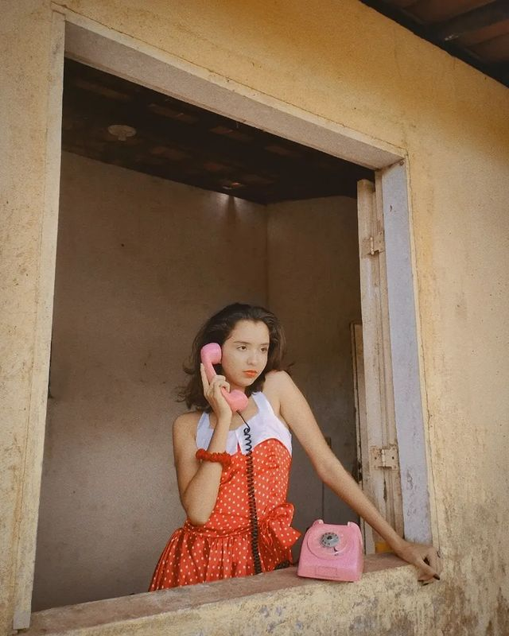

Meu hobbie, é voltado pro lado artístico, mas especificamente na fotografia, tempo livre ou ociosidade é sinônimo de produção pra mim.
Vou pesquisando inspirações, planejando cenários... enfim, play na produção e click com o celular e a minha irmã q está por trás da maioria.
Não posso deixar passar meu amor pela passarela, desde criança eu gostava de andar com saltos pela casa, assistir vídeos...até que em 2018 eu participo do meu primeiro desfile sendo a caçula da turma com adultos, e desde então eu vou nesses eventos sempre que tenho a oportunidade.